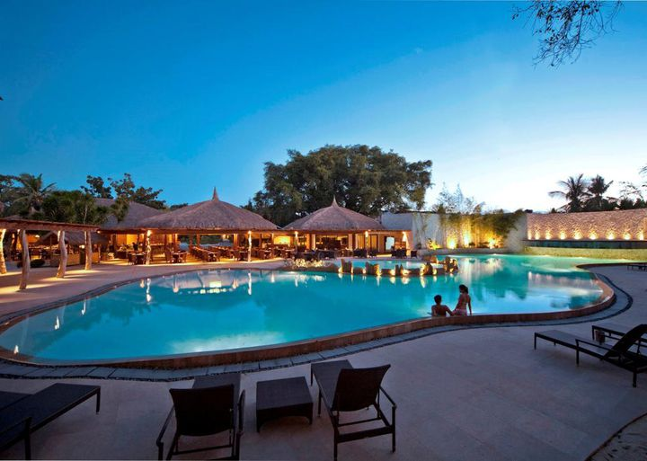
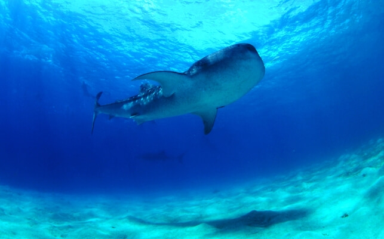
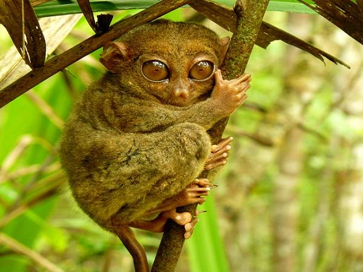

セブ旅行オススメプラン
「お金はないけど、時間はある！」というあなたにオススメのセブ旅行プランをご紹介します。
メインスポットは3つ
セブには大きく分けて3つのメインスポットがあります。旅の目的に合わせて、宿泊場所を決めるのがセブ旅行満喫のコツです！
-
 ①セブシティ・マクタン島
セブシティは、セブで最も栄えたエリアで、ショッピングなどが楽しめます。また、日本人の多くが宿泊するマクタン島は、リゾート地としてとても有名です。「ここは本当にフィリピンなのか！？」ってくらい綺麗なホテルがあり、のんびりとバケーションを楽しみたいならこのエリアがオススメ！
また、国際線の飛行機はマクタン島にある「Mactan-Cebu International Airport」で離着陸します。なので、飛行機が夜中着・早朝発の場合は、到着日と帰る前日は、このエリアに泊まるのがいいです。
-
 ②本島南部
自然アクティビティエリアで、セブのマリンアクティビティといえばこのエリア！ジンベイザメと泳げる「オスロブ」、オーシャンブルーが満喫できる「スミロン島」、コバルトブルーの滝「カワサンフォール」などが有名です！
-
 ③ボホール島
セブというと海のイメージが強いかもしれませんが、ボホール島は緑が豊かで、森林浴・ハイキングなどを楽しめます！ボホール島にはフィリピンメガネザルという世界一小さいサルが生息しているので動物園に行ったり、チョコレートヒルズという丘を鑑賞できるエリアです。
宿泊場所を決めるのは慎重に！
セブ全体が、赤で囲まれたエリアで、上記の3つの観光エリアは数字が示す場所になります。実はセブって観光スポット同士がすごく離れているんです。
なので、「セブに来たら、ジンベイザメと泳ぐんだ！」って意気込んでる人も多いかと思いますが、エリア①のセブシティ・マクタン島に宿泊している方は、毎朝3時にツアーの迎えのバスがきます。エリア②の南部に行くのに4時間くらいかかるので、目的に合わせて近い場所に前泊するのがオススメです。